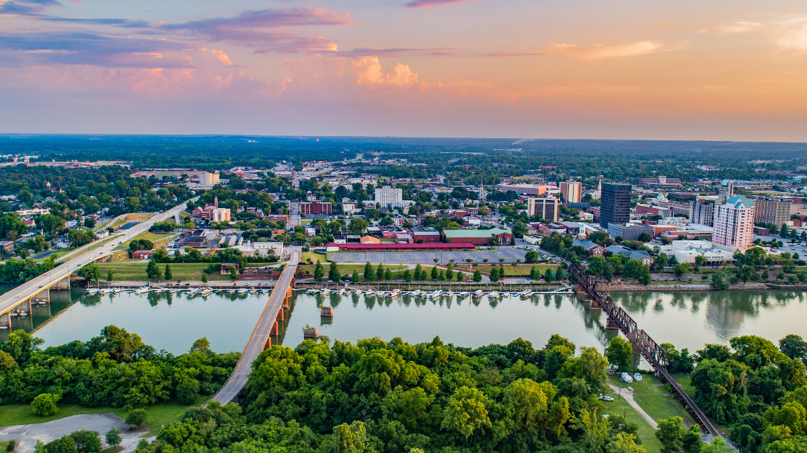

Avg. Individual Income: $23,703 vs US avg of $31,133

Augusta is Georgia's 3rd largest city. Called the Garden City because of it's greenery, large private gardens and springtime blooms. To name a few, some of it's beautiful green scenery can be seen at Riverwalk Augusta, Augusta Common, Augusta Canal, Phinizy Swamp Nature Park, and many more. It's climate and geography has made it a major resort city in the US's East Coast. (ref 4)
Augusta might be most known has the host city for many tournaments throughout the year. The Augusta Top Gun Series in Pendleton King Park, Augusta Southern Nationals "World's Richest Drag Boat Race", and Head of the South Regatta's rowing regatta's. However Augusta's most famous tournaments it hosts are The Masters and and IRONMAN 70.3. (ref 4)